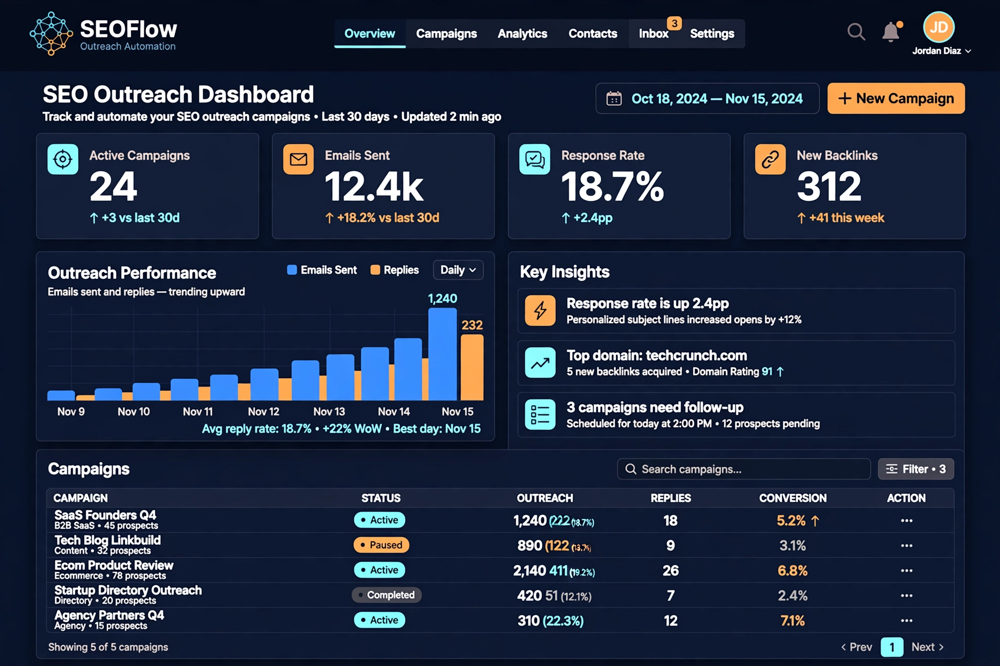
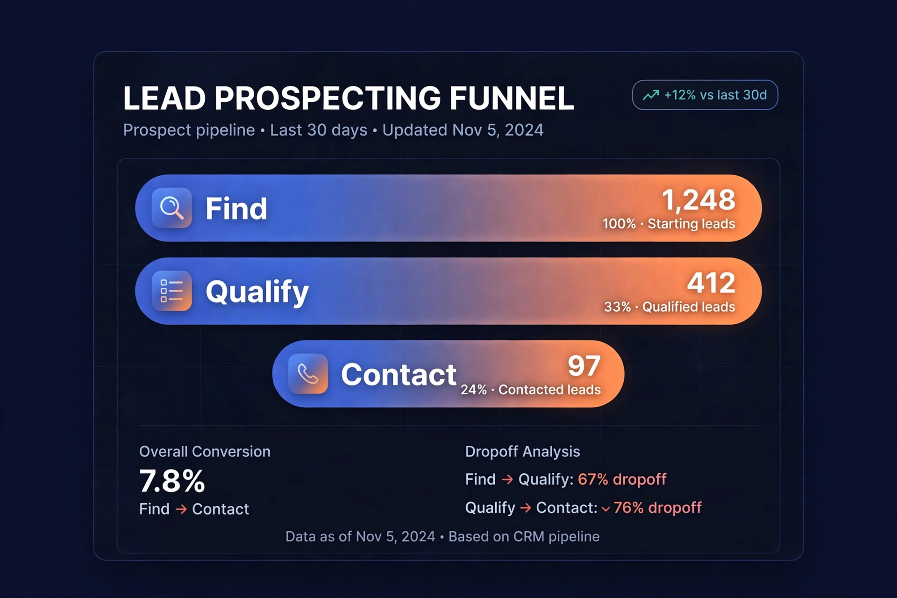
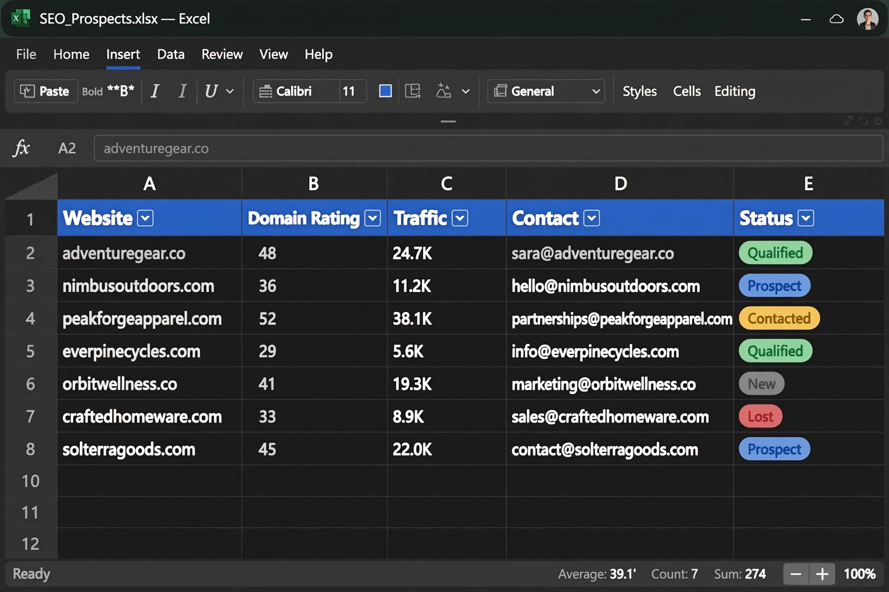

Hi, I’m Muhammad Ikhlaq Wahid.I get your website to the top of Google — and into AI answers.I am anSEO & Automation Expert
Most websites don’t have a traffic problem — they have a visibility problem. I fix the technical issues, build quality backlinks, and automate the outreach that gets you found — so more customers find you first.
AEO & GEO simply mean your business also shows up when people ask ChatGPT or Google’s AI a question — not just in normal search results.
Workar is a freelance marketplace — choose a service, pay securely, and I deliver the work.
0Services on Workar
0+Years doing SEO
0Live agency projects
2+ Years ExperienceSEO since Jan 2024
100% White-HatLink building
5 SEO ServicesOn Workar
Services
What I can do for your website
Five simple services. Pick one, and I do the work — you get the result.
Technical SEO Audit & On-Page SEO
I check your whole website for the problems stopping Google from ranking it — slow pages, broken links, missing information — then fix your pages so Google understands them. You get a clear report of what was wrong and what I fixed.
A full month of SEO: I improve your pages, build backlinks, and make sure your business shows up in Google and in AI answers like ChatGPT. WordPress setup included if you need a website.
I get quality websites to link to yours — the fastest way Google learns to trust you. Real guest posts on real websites, with a full report of every link.
I find the exact words your customers type into Google, then write a 1,000-word article around them — so your site shows up for searches that bring buyers.
Simple: I find the problem, fix it, and get you found
No confusing reports, no guesswork. Here is exactly what happens when you hire me.
01
I check your website
I look at how Google sees your site today: what ranks, what’s broken, and what your competitors do better.
02
I fix it and build trust
I fix the technical problems, improve your pages, and get quality websites to link to you.
03
You get found — and stay found
Your pages climb Google and appear in AI answers. My software keeps the outreach running in the background and reports every result.
The repetitive work is done by software I built myself — it finds the right websites, sends personal emails, and tracks every reply — so nothing stops and nothing gets missed.
My work
Things I’ve built
The tools behind my SEO work — built at Boost Agency, used on live client websites every day.

Outreach Dashboard
One screen showing every campaign: who I contacted, who replied, and every link earned. No guessing, no manual reports.

Guest-Post Outreach System
Finds the right websites, contacts them with personal emails, and follows up automatically until the guest post is live.

Data Pipelines
Collects website data into clean spreadsheets automatically — business lists, prices, contacts — ready to use.
About me
SEO Specialist. Automation Expert. Based in Islamabad.
I’m Muhammad Ikhlaq Wahid, an SEO specialist from Islamabad, Pakistan. I work at Boost Agency, where I run off-page SEO and outreach automation for live client websites. I studied software engineering, so I don’t just report problems — I fix them myself.
I also work with businesses in restricted industries — like crypto and CBD — that most SEO specialists won’t touch.
Skills & tools
What I work with
The skills and tools behind every project.
SEO
Technical SEO
On-Page SEO
Off-Page SEO
Link Building
Guest Posting
Keyword Research
SEO Content
AEO & GEO
Automation
Outreach Automation
Python
Selenium
Web Scraping
WordPress
Tools I use every day
Ahrefs
SEMrush
Google Search Console
Google Analytics
Screaming Frog
Experience
Where I’ve worked
SEO Executive — Off-Page Automation · Boost Agency, Islamabad · May 2026 – Present Running automated outreach and off-page SEO for live client websites.
SEO & WordPress Specialist · Positive Solutions, Bahawalpur · Jan 2024 – Sep 2025 On-page and technical SEO, keyword research, and WordPress websites.
Web Scraping & Selenium Automation · Algotix, Bahawalpur · Oct 2024 – Jan 2025 Built scrapers that collect website data automatically.
Education
BS Software Engineering — The Islamia University of Bahawalpur (2022–2026).
Contact
Let’s make your website easy to find
Tell me about your website and what you want — more visitors, more calls, more customers. I’ll tell you honestly what I can do.